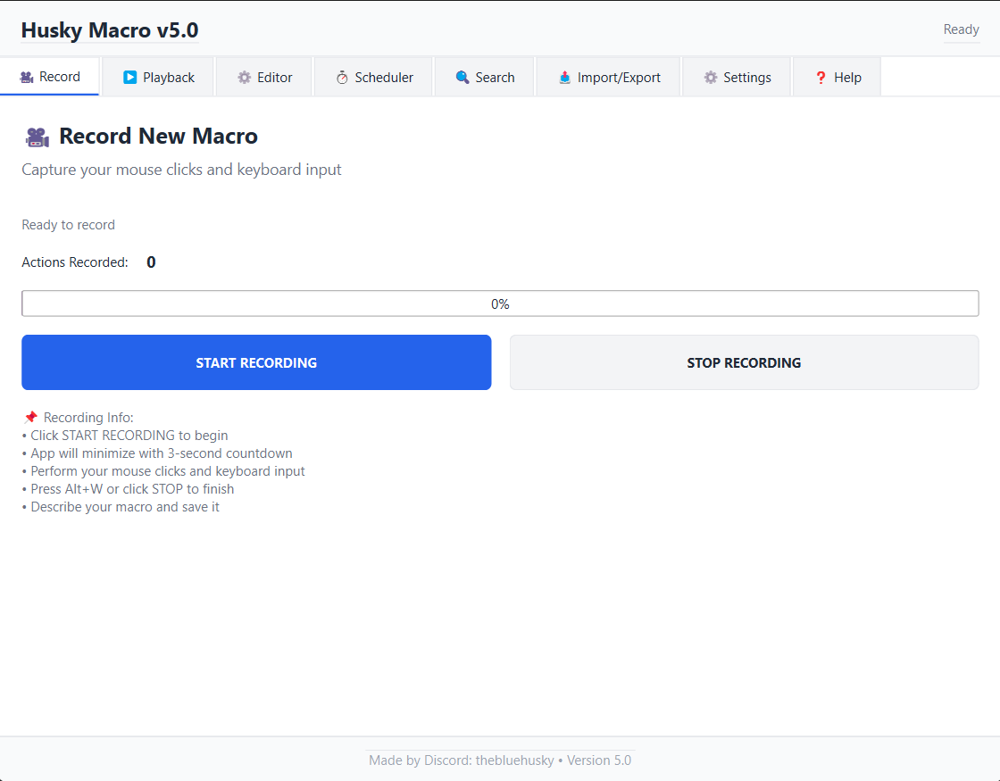

A non-nonsense, professional automation engine. Built for power users who need advanced scheduling, sequential execution, and deep macro editing.

Don't just run one macro. Build complex execution chains. Our scheduler allows you to queue multiple macros, set individual repetition counts for each, and track real-time progress through a dedicated visual queue.
Macro Organization System
Stop scrolling through endless lists. Husky Macro features a professional Search & Tagging system. Assign custom labels to your automations and filter your entire database instantly by name or category.
Fine-tune every action. Change mouse X/Y coordinates, adjust millisecond delays, or swap keyboard keys without re-recording.
Export macros as JSON for single files or ZIP bundles for entire libraries. Perfectly preserved metadata for easy sharing.